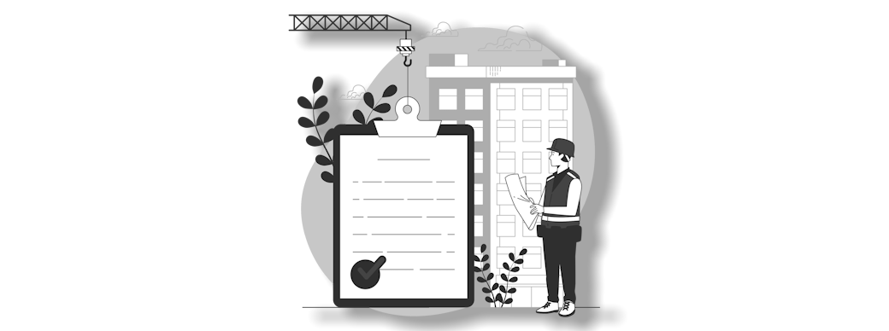
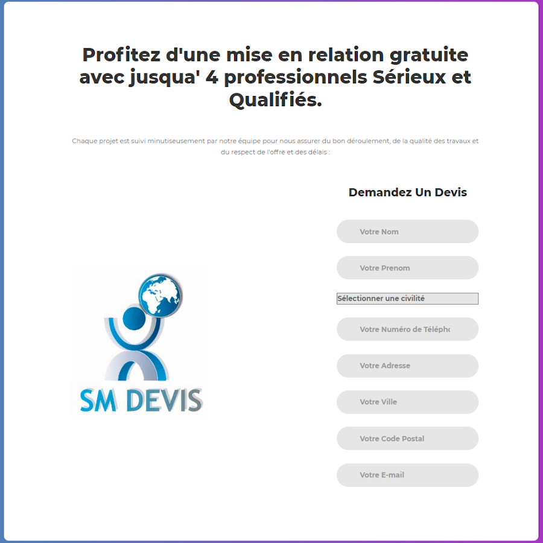
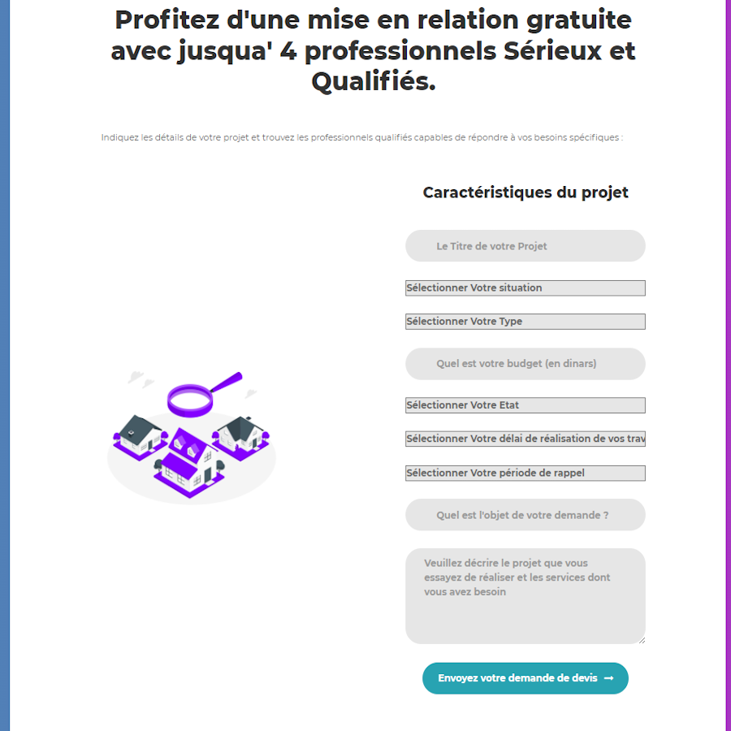
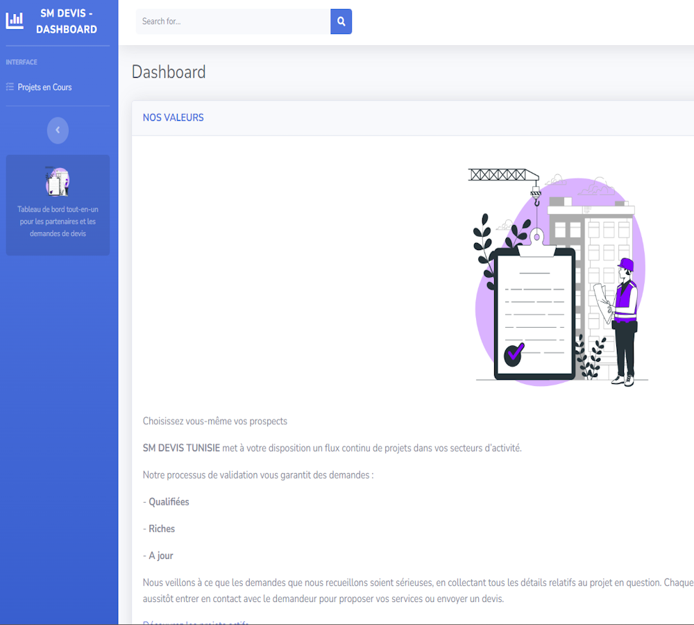
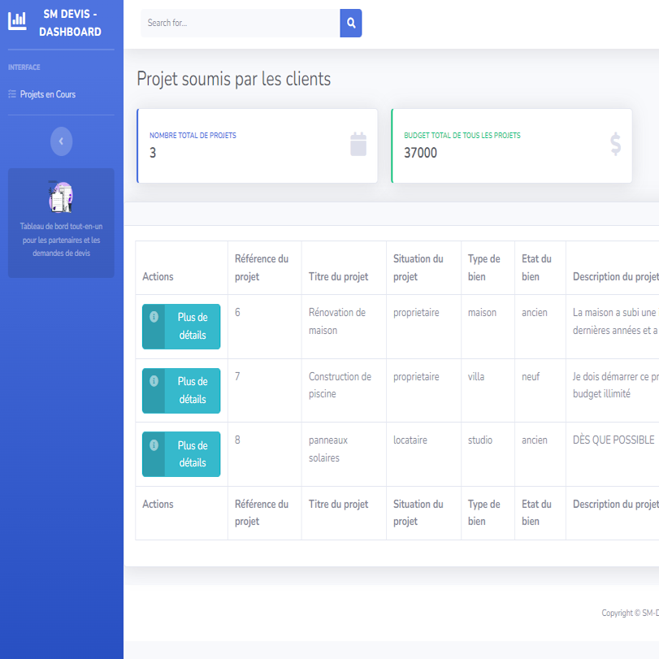

Summer Internship Project at SM Devis
 During my summer internship at SM DEVIS, I had the exciting opportunity to develop a web-based platform that connects individuals seeking house renovations or various services with potential partners who offer these services. The platform streamlines the process of connecting service providers and those in need.
 As the sole developer of this project, I implemented three key functionalities to create a c omprehensive platform. First, a user-friendly submission form is accessible through the URL /newprojet. This form empowers users to provide detailed information about their renovation or service requirements. Second, a partner application form found at /form is designed for potential service providers interested in becoming partners. Admin approval is required before partners gain access. Lastly, an admin dashboard is available at /dashboard, serving as a central hub for administrators to assess partner applications, make approval decisions, and oversee the platform's functionality.
 Implemented using Symfony and MySQL, the project leverages Symfony's powerful features for a seamless user experience. For potential partners, a subscription-based model grants access to the dashboard and project submissions. The admin dashboard empowers administrators to efficiently manage partner applications and platform quality.
 This project offered valuable insights into web development, Symfony, and database management. It showcased my practical problem-solving skills for real-world scenarios. Proud of the SMDevis project and honed skills, it stands as a testament to my capability in creating effective and user-centric web applications.
Project Repository Link